Music Terms and Definitions
Accent - is an emphasis, stress, or stronger attack placed on a particular note or set of notes.
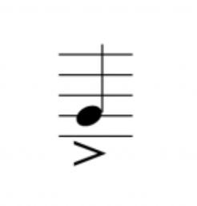
Accidental - symbols such as sharps or flats and naturals that raise or lower a pitch.
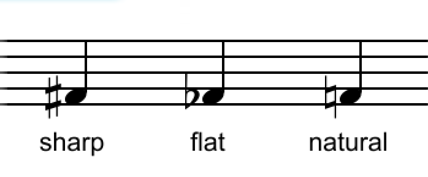
Beat - a musical pulse or unit of time / the steady pulse of music.
Chord - a combination of three or more notes sounding at the same time / multiple notes sounding simultaneously
Clef - a symbol placed at the beginning of the staff to indicate names of lines and spaces.
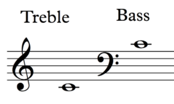
Crescendo - gradually get louder
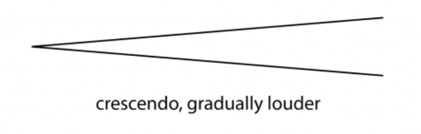
Decrescendo - gradually get softer
Dynamics - symbols that indicate a change in volume of a song.
Fermata - is indicated by a curved arc and a dot over a note or rest, telling us to hold it longer than its normal duration.
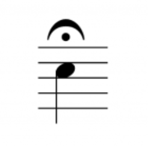
Flat - a symbol written to the left of a not that lowers the pitch by a half step.
Forte - musical dynamic meaning loud.
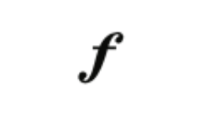
Grand Staff - a pair of five-line staffs connected by a brace that contain the music for a single instrument.
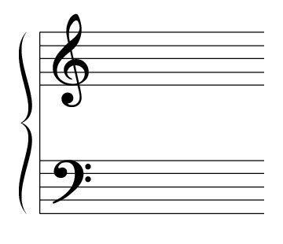
Half Step - the distance between one key and the next adjacent white or black key on a keyboard.
Legato - playing notes in a smooth, connected manner.
Measure - the space between one bar line and the next.
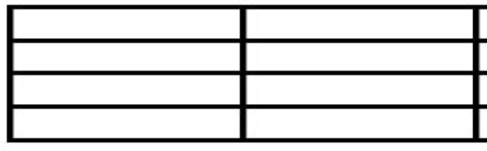
Natural Sign - is an accidental sign used to cancel a flat or sharp from either a preceding note or the key signature.
Phrase - a complete musical phrase or thought.
Piano - musical dynamic meaning loud.
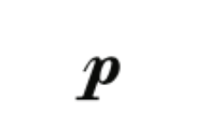
Repeat Sign - a sign that indicates a section of music to be played again.
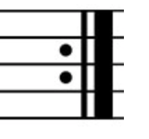
Rest - a symbol used to indicate silence in music.
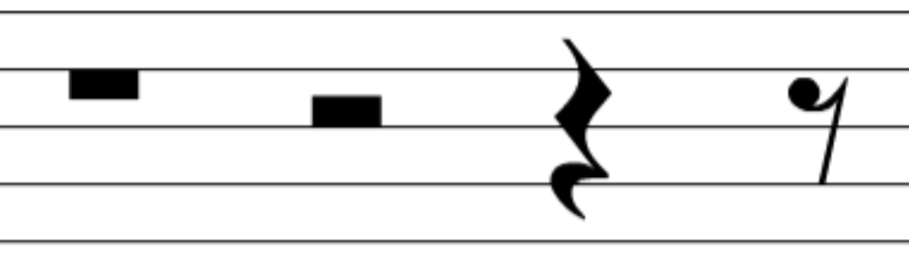
Sharp - a symbol written to the left of a note that raises the pitch by a half step.
Slur - a curved line connecting two or more different notes, indicating to play the music smoothly.
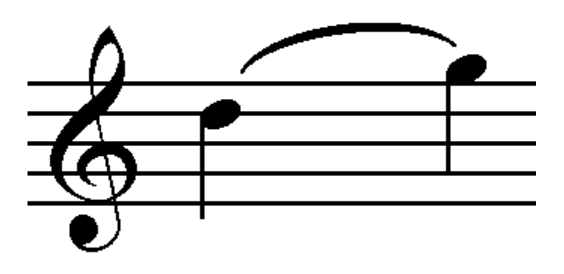
Staccato - a dot over or under notes that indicate playing the note short and detached.
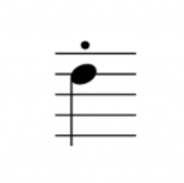
Staff - horizontal lines on which notes are written. The musical staff has five lines and four spaces.
Tempo - the speed the music is to be played.
Tie - a curved line connecting two notes together, indicating to play them as a single note.
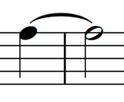
Whole Step - A whole step is equal to two half steps.